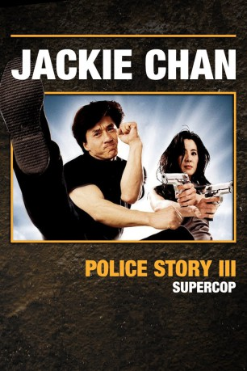

#8692 Police Story 3 - Supercop
Alternativ: Supercop (Englischer Titel)
 
 IMDB-Wertung: 6.9 / 10
IMDB-Wertung: 6.9 / 10  Metascore: 0
Metascore: 0 
Von der Routine in Hong-kong angeödet, steigt Top-Polizist Chan bei Interpol ein. Es gilt, die Bande des mächtigen Drogenbarons Chaibat auszuheben. Chan fliegt nach China, wo ihn Yang, die attraktive Chefin des chinesischen Geheimdienstes, unter ihre Fittiche nimmt. Sie stattet Chan mit neuer Identität aus und lässt ihn in ein Arbeitslager einbuchten…
Jahr: 1992
Dauer: 95 Minuten
FSK: 16
Land: Hong-Kong Studio: VPS Film-Entertainment GmbHTonspuren: DD5.1 - ,
Untertitel: Englisch,
Auflösung: 1080p (1920x816) Größe: 7157 MB
Genre: Action, Thriller, Komödie, Krimi
Regisseur: Stanley Tong
Drehbuch: Edward Tang
Soundtrack: Mac Chew, Jenny Chinn, Tsung-Sheng Lee, Joel McNeely
Darsteller:
 Jackie Chan als Insp. Chan Ka Kui
Jackie Chan als Insp. Chan Ka Kui Michelle Yeoh als Insp. Jessica Yang, Director of INTERPOL
Michelle Yeoh als Insp. Jessica Yang, Director of INTERPOL Maggie Cheung als May
Maggie Cheung als May Kenneth Tsang als Chaibat
Kenneth Tsang als Chaibat Wah Yuen als Panther
Wah Yuen als Panther Bill Tung als 'Uncle' Bill Wong
Bill Tung als 'Uncle' Bill Wong Lieh Lo als The General
Lieh Lo als The General Burt Kwouk als The General (uncredited)
Burt Kwouk als The General (uncredited) Mars als Panther's Man (uncredited)
Mars als Panther's Man (uncredited)- Kim Penn als Blonde Gunwoman (uncredited)
- Josephine Koo als Cheng Wen Shi, Chaibat's Wife
- Kelvin Wong als Peter
 Philip Chan als Insp. Y.K. Chen
Philip Chan als Insp. Y.K. Chen Ken Lo als Chaibat's man
Ken Lo als Chaibat's man- Wai Shum als Drug Lord #1 at Meeting
- Yi-Sheng Han als
- Sze Tsuen Wai als
- Wai-Lun Tuan als
- Wong Yue Man als
 Chi Ming Lau als PRC Capt. Chen Hsiang Tung
Chi Ming Lau als PRC Capt. Chen Hsiang Tung- Wai Man Tam als Scar Chiang
- Sek Chan als Panther's Man (uncredited)
- Burton Sharp als Uncle Bill (uncredited)
- John Wakefield als Interpol Officer (uncredited)
- Ming-Sing Wong als PRC Chief Coach Wang (uncredited)
Datei: X:\HD-Eastern-Collections\Jackie Chan\Police Story\Police Story 3 - Supercop (1992, FSK16, 1920x816).mkv seit 25.04.2018
Festplatte: HD Eastern+Western
 Es gibt insgesamt 58 Filme in der Gruppe 'HD-Eastern-Collections\Jackie Chan'
Es gibt insgesamt 58 Filme in der Gruppe 'HD-Eastern-Collections\Jackie Chan'